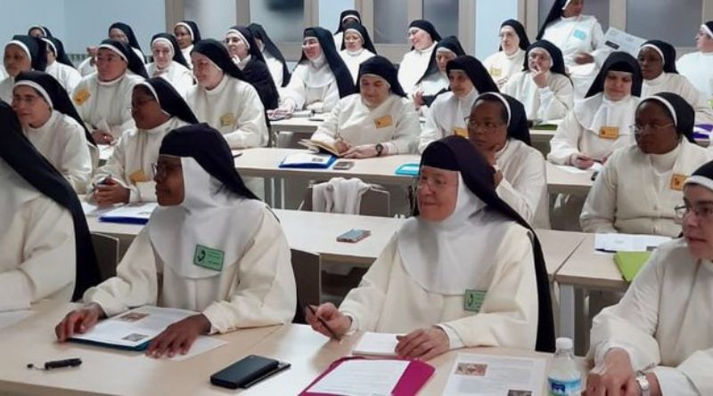

Ruidos inexplicables y objetos que parecen moverse solos: las ex monjas clarisas de Belorado denunciaron fenómenos extraños en el monasterio de Derio
Las exmonjas clarisas de Belorado (Burgos) que en 2017 se encontraban en el monasterio de Derio,
denunciaron que durante esa época se produjeron una serie de fenómenos extraños que ellas relacionan
con una presencia maligna en el convento y que motivó que el Arzobispado de Bilbao realizara una
investigación que concluyó que no existía ninguna certeza.
Esta es una de las revelaciones que recoge un artículo publicado este pasado martes por "The New York Times"
en el que hace un repaso por la situación de estas ya exmonjas que el próximo jueves 19 de diciembre
tienen una primera cita judicial ante la demanda de desahucio presentada por el arzobispo de Burgos.

En el artículo, algunas de estas exmonjas relatan que durante su estancia en el monasterio de Derio
comenzaron a enfermar y surgieron disputas entre ellas.
Además, experimentaron fenómenos extraños durante la noche, como ruidos inexplicables, risas desoladoras
y objetos que parecían moverse solos.
Esto las llevó a creer que había una presencia maligna en el convento. "Cuando te enfrentas al diablo,
sabes con quién estás tratando", declara la exmonja Paloma en este medio estadounidense.
Por su parte, fuentes del Arzobispado de Burgos, que dirige Mario Iceta y que en aquel momento
era el arzobispo de Bilbao, han explicado a Efe que en el monasterio de Derio se realizaron
investigaciones y procedimientos según recoge el ritual de exorcismos.
Y el informe concluyó que no constaba la certeza de los fenómenos puestos en conocimiento
por las ahora exmonjas y recuerdan estas fuentes que fueron ellas las que quisieron marcharse del monasterio de Derio y que nadie las echó.